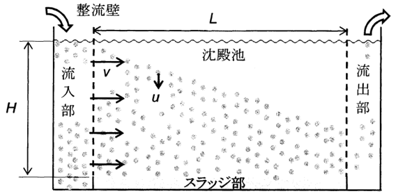

令和3年度 問34 化学プロセス
排水中に直径dp＝6.0×10-5 m、粒子密度ρp＝1200 kg/m3の粒子のみが懸濁している。粒子の沈降速度ut［m/s］は次式のストークスの式に従うものとする。
ストークスの式：ut＝（ρp－ρ）gdp2 / 18μ
ここで、ρ：水の密度（＝1000 kg/m3）、g：重力加速度（＝9.8 m/s2）、μ：水の粘度（＝0.0010 Pa s）である。
深さH＝5 mの横流式沈殿池（下図）を用いてこのdp、ρpの粒子のみを含む排水から粒子を60%除去したい。そのために必要な沈殿池の長さL［m］として、最も近い値はどれか。ただし、水の流れは水平方向の速度v＝0.0034 m/sで均一とする。

①
7 m
②
6 m
③
3 m
④
0 m
⑤
9 m
正答
② 6 m
ストークスの式を解きます。
ut＝（1,200－1,000）× 9.8 × (6 × 10-5)2 / (18 × 0.0010)
ut＝200× 9.8 × 36 × 10-10 / (18 × 10-3)
ut＝0.000392 m/s
粒子の60％を除去するため、高さ5 mの60％沈降すれば良い計算となります。沈降に要する時間は5 × 0.6 / 0.000392＝7653 sです。
水の水平方向の流れを考えると、必要となる距離は7653 × 0.0034＝26 mです。